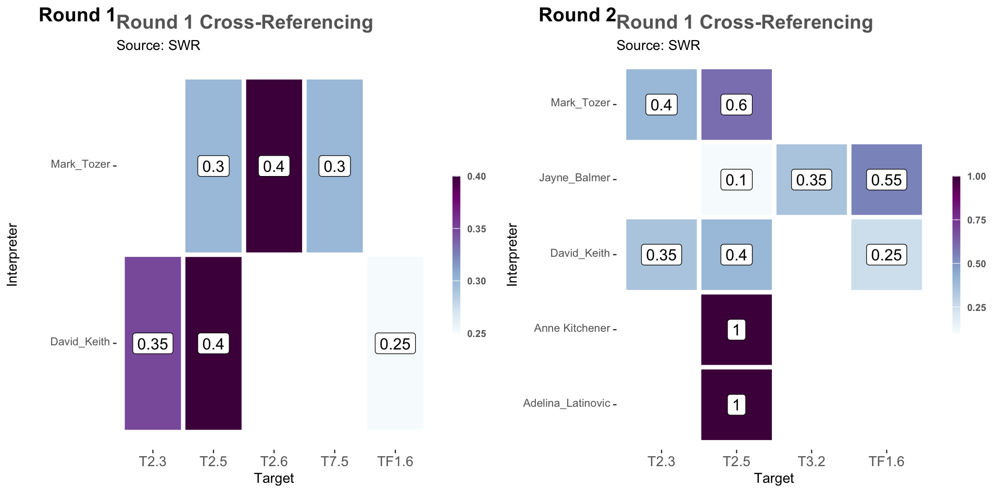
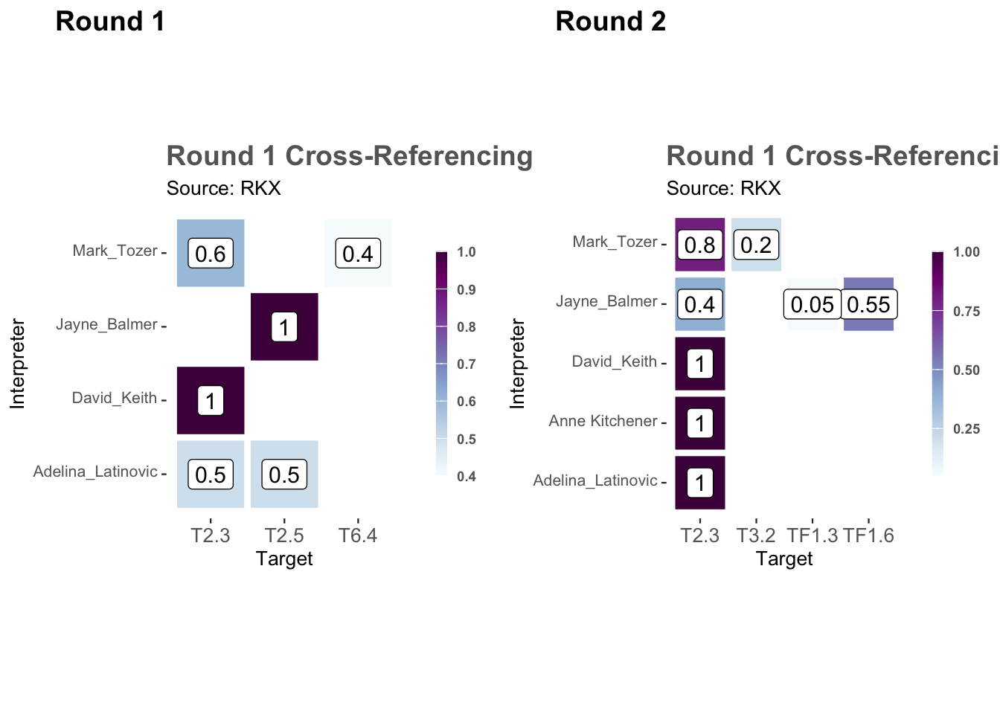

library(dplyr)
library(ecoSynthesis)
library(ggplot2)
library(cowplot)
here::i_am("preparation/validation.qmd")
output_dir <- here::here("../results/XREFs")
output_dir <- here::here("../results/XREFs")
source(here::here("../scripts/setup.R"))
source(here::here("../scripts/functions.R"))
load(here::here(output_dir, "lookup-tables.rda"))
load(here::here(output_dir, "memb-tables.rda"))7 Exploration of the data
Now that we have validated the input data from five interpreters in a common format, we can produce some informative summaries.
Our setup for this R session is:
7.1 Additional checks
7.1.1 Are memberships complete ?
Test if there are any assessments with total membership values below 1:
TASVEG_clean |>
group_by(VEGCODE, expert, round) |>
summarise(total = sum(memb), .groups = "drop") |>
filter(total < 0.999) |>
arrange(total) |>
print.data.frame(digits = 3)[1] VEGCODE expert round total
<0 rows> (or 0-length row.names)Only one case:
TASVEG_clean |>
filter(expert == "Jayne_Balmer", VEGCODE == "HSE")<membership_tbl>
source_id column: VEGCODE
target_id column: EFG
membership column: memb
interpreter column: expert
# A tibble: 3 × 5
VEGCODE EFG memb expert round
<chr> <chr> <dbl> <chr> <dbl>
1 HSE T6.4 1 Jayne_Balmer 1
2 HSE T6.4 0.95 Jayne_Balmer 2
3 HSE TF1.7 0.05 Jayne_Balmer 27.1.2 Are memberships duplicated?
Test if there are any assessments with total membership values above 1:
TASVEG_clean |>
group_by(VEGCODE, expert, round) |>
summarise(total = sum(memb), .groups = "drop") |>
filter(total > 1.001) |>
arrange(total) |>
print.data.frame(digits = 3)[1] VEGCODE expert round total
<0 rows> (or 0-length row.names)No problems detected!
7.1.3 Test if there are duplicated rows
TASVEG_clean |>
group_by(VEGCODE, EFG, expert, round) |>
summarise(n = n(), .groups = "drop") |>
filter(n > 1) |>
arrange(n) |>
print.data.frame(digits = 3)[1] VEGCODE EFG expert round n
<0 rows> (or 0-length row.names)There is a potential typo in round 2:
TASVEG_clean |>
filter(expert == "Mark_Tozer", VEGCODE == "SWR")<membership_tbl>
source_id column: VEGCODE
target_id column: EFG
membership column: memb
interpreter column: expert
# A tibble: 5 × 5
VEGCODE EFG memb expert round
<chr> <chr> <dbl> <chr> <dbl>
1 SWR T2.6 0.4 Mark_Tozer 1
2 SWR T7.5 0.3 Mark_Tozer 1
3 SWR T2.5 0.3 Mark_Tozer 1
4 SWR T2.5 0.6 Mark_Tozer 2
5 SWR T2.3 0.4 Mark_Tozer 2There is a potential typo in round 1:
TASVEG_clean |>
filter(expert == "David_Keith", VEGCODE == "SLL")<membership_tbl>
source_id column: VEGCODE
target_id column: EFG
membership column: memb
interpreter column: expert
# A tibble: 4 × 5
VEGCODE EFG memb expert round
<chr> <chr> <dbl> <chr> <dbl>
1 SLL TF1.6 0.6 David_Keith 1
2 SLL TF1.2 0.4 David_Keith 1
3 SLL TF1.6 0.6 David_Keith 2
4 SLL TF1.2 0.4 David_Keith 27.2 Variability in the assessments
The number of candidates per source unit is an indicator of how much agreement and certainty there is about the membership of the unit.
candidates_per_vegcode <- TASVEG_clean |>
group_by(VEGCODE) |>
summarise(
`Nr. of candidates` = n_distinct(EFG),
`Highest membership` = max(memb),
.groups = "drop"
)
candidates_per_vegcode |>
group_by(`Nr. of candidates`) |>
summarise(`Distinct VEGCODES` = n_distinct(VEGCODE))# A tibble: 6 × 2
`Nr. of candidates` `Distinct VEGCODES`
<int> <int>
1 1 25
2 2 59
3 3 40
4 4 15
5 5 10
6 6 4For 25 units from the source classification, all experts agree in one single candidate from the target classification.
A dynamic and filterable table allows to browse the records according to the number of interpreter agreements, or according to specific source units:
TASVEG_clean |>
filter(round == 1) |>
group_by(VEGCODE, EFG, memb) |>
summarise(
`Nr. of experts` = n_distinct(expert),
experts = paste(expert, collapse = ";"),
.groups = "drop"
) |>
arrange(desc(`Nr. of experts`), desc(memb)) |>
DT::datatable()Particularly, we are interested in the four units with the larger number of candidates (6) across interpreters/rounds:
candidates_per_vegcode |>
filter(`Nr. of candidates` == 6)# A tibble: 4 × 3
VEGCODE `Nr. of candidates` `Highest membership`
<chr> <int> <dbl>
1 AWU 6 1
2 NAD 6 1
3 RKX 6 1
4 SWR 6 1Looking at some of these in details reveals some cases where interpreters do not change their assessment after group discussion (divergent opinions).
r1plot <- TASVEG_clean |>
filter(VEGCODE == "SWR", round == 1) |>
membership_tile_plot()
r2plot <- TASVEG_clean |>
filter(VEGCODE == "SWR", round == 2) |>
membership_tile_plot()
plot_grid(
r1plot,
r2plot,
ncol = 2,
labels = c("Round 1", "Round 2"),
align = "hv"
)
But in other cases there are some signs of improved alignment after group discussions (convergent opinions).
r1plot <- TASVEG_clean |>
filter(VEGCODE == "RKX", round == 1) |>
membership_tile_plot()
r2plot <- TASVEG_clean |>
filter(VEGCODE == "RKX", round == 2) |>
membership_tile_plot()
plot_grid(
r1plot,
r2plot,
ncol = 2,
labels = c("Round 1", "Round 2"),
align = "hv"
)
7.3 Groups of source units
Often the source classification will have a hierarchical structure with units grouped by different criteria as the target classification.
This is a selection of vegetation communities belonging to “Native grasslands” vegetation group according to the TASVEG classification:
TASVEG |>
filter(VEG_GROUP == "Native grassland") |>
select(VEG_GROUP, VEGCODE_D) |>
DT::datatable()This group appears to include units that are assigned to different groups in the target classification, however, all experts agree with this dychotomy:
TASVEG_clean |>
left_join(TASVEG, by = "VEGCODE") |>
filter(VEG_GROUP == "Native grassland") |>
group_by(EFG) |>
summarise(
`Nr. VEGCODE` = n_distinct(VEGCODE),
`Nr. experts` = n_distinct(expert),
`Mean memberships` = mean(memb)
) |>
arrange(desc(`Nr. experts`), desc(`Nr. VEGCODE`))# A tibble: 4 × 4
EFG `Nr. VEGCODE` `Nr. experts` `Mean memberships`
<chr> <int> <int> <dbl>
1 T4.5 6 5 0.777
2 T7.5 5 5 0.381
3 MT2.1 2 5 0.836
4 T4.4 5 3 0.292In contrast, the “Wet eucalypt forest and woodland” is a larger group, but all experts agree that most units belong primarily to a single group in the target classification, with some experts assigned minority values to other groups.
TASVEG |>
filter(VEG_GROUP == "Wet eucalypt forest and woodland") |>
select(VEG_GROUP, VEGCODE_D) |>
DT::datatable()TASVEG_clean |>
left_join(TASVEG, by = "VEGCODE") |>
filter(VEG_GROUP == "Wet eucalypt forest and woodland") |>
group_by(EFG) |>
summarise(
`Nr. VEGCODE` = n_distinct(VEGCODE),
`Nr. experts` = n_distinct(expert),
`Mean memberships` = mean(memb)
) |>
arrange(desc(`Nr. experts`), desc(`Nr. VEGCODE`))# A tibble: 4 × 4
EFG `Nr. VEGCODE` `Nr. experts` `Mean memberships`
<chr> <int> <int> <dbl>
1 T2.5 18 5 0.934
2 T2.6 13 2 0.231
3 T2.3 4 2 0.41
4 T2.4 2 1 0.175Similarly the “Dry eucalypt forest and woodland” includes many source units with consistently high relationship values to particular units in the target classification.
TASVEG |>
filter(VEG_GROUP == "Dry eucalypt forest and woodland") |>
select(VEG_GROUP, VEGCODE_D) |>
DT::datatable()TASVEG_clean |>
left_join(TASVEG, by = "VEGCODE") |>
filter(VEG_GROUP == "Dry eucalypt forest and woodland") |>
group_by(EFG) |>
summarise(
`Nr. VEGCODE` = n_distinct(VEGCODE),
`Nr. experts` = n_distinct(expert),
`Mean memberships` = mean(memb)
) |>
arrange(desc(`Nr. experts`), desc(`Nr. VEGCODE`))# A tibble: 6 × 4
EFG `Nr. VEGCODE` `Nr. experts` `Mean memberships`
<chr> <int> <int> <dbl>
1 T2.6 35 5 0.802
2 T4.4 25 5 0.504
3 T2.5 11 5 0.279
4 TF1.2 5 5 0.442
5 TF1.6 1 5 0.193
6 T3.2 3 2 0.175Within the Dry eucalypt forest and woodland group, the Eucalyptus perriniana forest and woodland community has a slightly different membership profile.
TASVEG_clean |>
filter(grepl("^DPE", VEGCODE)) |>
group_by(EFG) |>
summarise(
`Nr. experts` = n_distinct(expert),
`Mean memberships` = mean(memb)
) |>
arrange(desc(`Nr. experts`))# A tibble: 4 × 3
EFG `Nr. experts` `Mean memberships`
<chr> <int> <dbl>
1 T2.6 5 0.742
2 TF1.6 5 0.193
3 T3.2 2 0.183
4 TF1.2 1 0.35